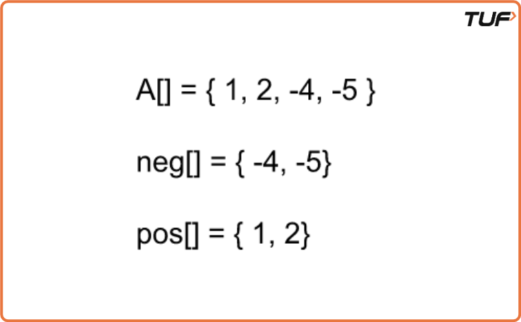
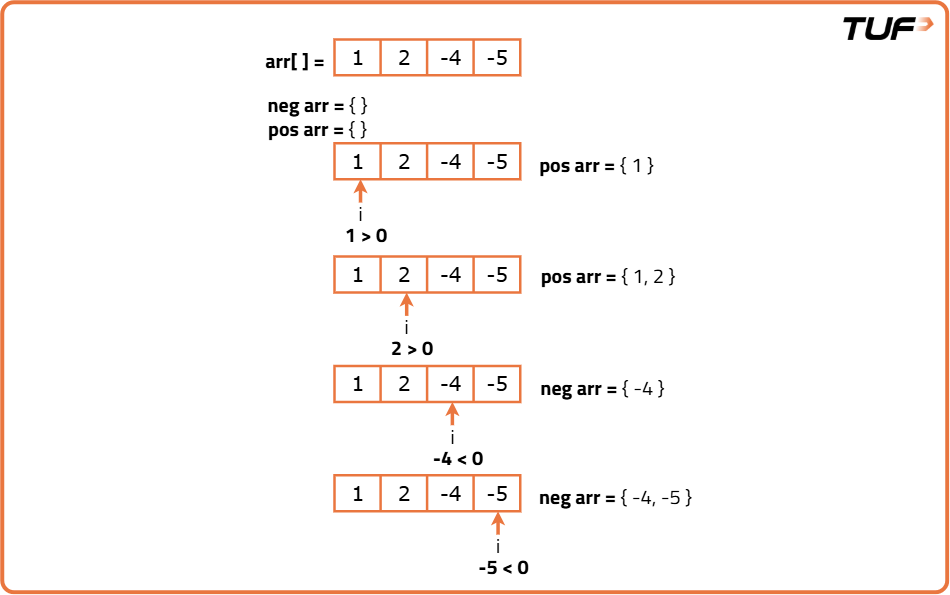
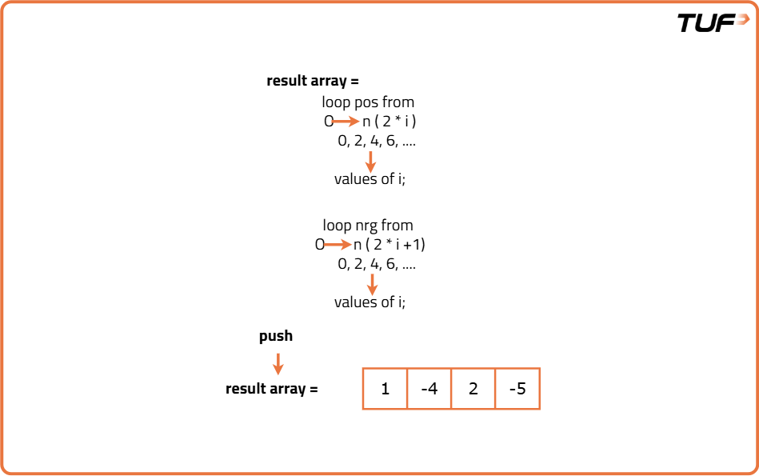
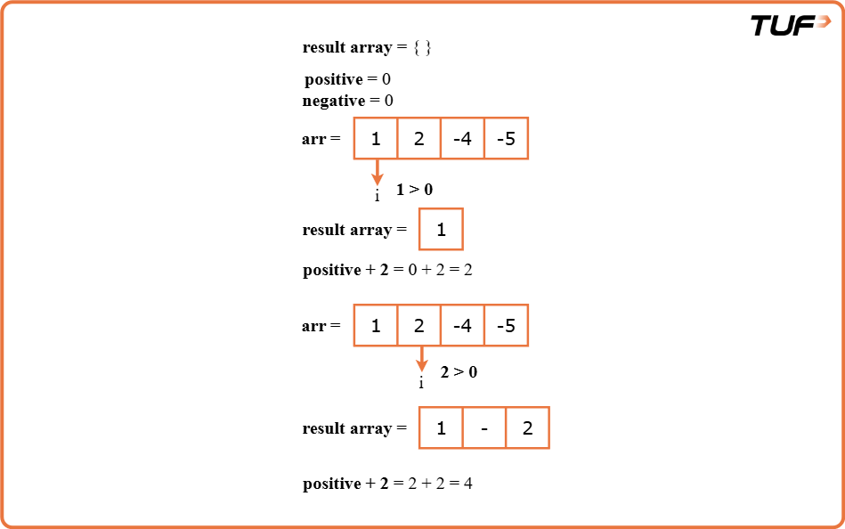
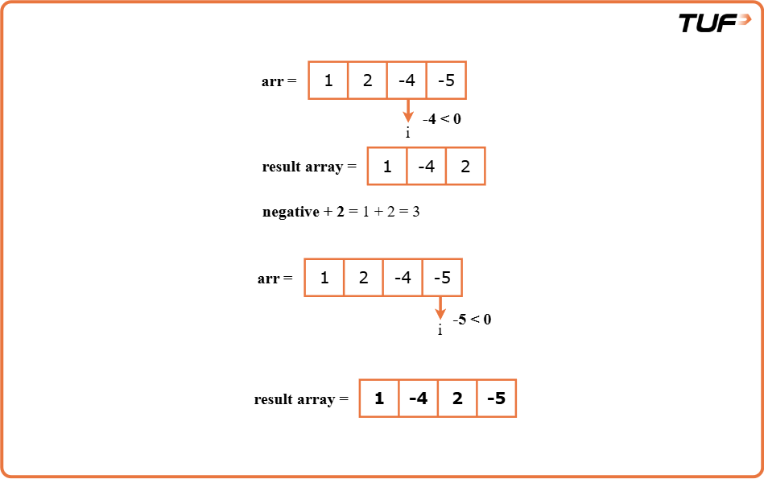

Rearrange Array Elements by Sign
Problem Statement: There’s an array ‘A’ of size ‘N’ with an equal number of positive and negative elements. Without altering the relative order of positive and negative elements, you must return an array of alternately positive and negative values.
Examples
Example 1:
Input:
arr[] = {1,2,-4,-5}, N = 4
Output:
1 -4 2 -5
Explanation:
Positive elements = 1,2
Negative elements = -4,-5
To maintain relative ordering, 1 must occur before 2, and -4 must occur before -5.

Example 2:
Input:
arr[] = {1,2,-3,-1,-2,-3}, N = 6
Output:
1 -3 2 -1 3 -2
Explanation:
Positive elements = 1,2,3
Negative elements = -3,-1,-2
To maintain relative ordering, 1 must occur before 2, and 2 must occur before 3.
Also, -3 should come before -1, and -1 should come before -2.
Disclaimer: Here is the practice link to help you assess your knowledge better. It's highly recommend trying to solve it before looking at the solution.

Brute Force Approach
Algorithm
- In this simple approach, since the number of positive and negative elements are the same, we put positives into an array called “pos” and negatives into an array called “neg”.
- After segregating each of the positive and negative elements, we start putting them alternatively back into array A.
- Since the array must begin with a positive number and the start index is 0, so all the positive numbers would be placed at even indices (2*i) and negatives at the odd indices (2*i+1), where i is the index of the pos or neg array while traversing them simultaneously.
- This approach uses O(N+N/2) of running time due to multiple traversals which we’ll try to optimize in the optimized approach given below.


Code
#include <bits/stdc++.h>
using namespace std;
// Class to encapsulate array operations
class ArrayManipulator {
public:
// Function to rearrange elements so that positives and negatives alternate
vector<int> RearrangeBySign(vector<int>& A, int n) {
vector<int> pos; // Vector to store positive numbers
vector<int> neg; // Vector to store negative numbers
// Step 1: Separate positives and negatives
for (int i = 0; i < n; i++) {
if (A[i] > 0)
pos.push_back(A[i]); // Add positive to pos[]
else
neg.push_back(A[i]); // Add negative to neg[]
}
// Step 2: Place positives at even indices and negatives at odd indices
for (int i = 0; i < n / 2; i++) {
A[2 * i] = pos[i]; // Even index → positive
A[2 * i + 1] = neg[i]; // Odd index → negative
}
return A; // Return the rearranged array
}
};
// Driver code
int main() {
int n = 4;
vector<int> A{1, 2, -4, -5};
// Create object of the class
ArrayManipulator obj;
// Call the function and get result
vector<int> ans = obj.RearrangeBySign(A, n);
// Print the rearranged array
for (int i = 0; i < ans.size(); i++) {
cout << ans[i] << " ";
}
return 0;
}
Complexity Analysis
Time Complexity: O(N+N/2) { O(N) for traversing the array once for segregating positives and negatives and another O(N/2) for adding those elements alternatively to the array, where N = size of the array A}.
Space Complexity: O(N/2 + N/2) = O(N) { N/2 space required for each of the positive and negative element arrays, where N = size of the array A}.
Optimal Approach
Algorithm
- In this optimal approach, we will try to solve the problem in a single pass and try to arrange the array elements in the correct order in that pass only.
- We know that the resultant array must start from a positive element so we initialize the positive index as 0 and negative index as 1 and start traversing the array such that whenever we see the first positive element, it occupies the space at 0 and then posIndex increases by 2 (alternate places).
- Similarly, when we encounter the first negative element, it occupies the position at index 1, and then each time we find a negative number, we put it on the negIndex and it increments by 2.
- When both the negIndex and posIndex exceed the size of the array, we see that the whole array is now rearranged alternatively according to the sign.


Code
#include <bits/stdc++.h>
using namespace std;
// Define a class to handle array manipulation
class ArrayManipulator {
public:
// Function to rearrange elements by alternating sign
vector<int> rearrangeBySign(vector<int>& A) {
int n = A.size();
// Create a result array of size n initialized with 0
vector<int> ans(n, 0);
// posIndex will store index for next positive number (even index)
// negIndex will store index for next negative number (odd index)
int posIndex = 0, negIndex = 1;
// Loop through the original array
for (int i = 0; i < n; i++) {
if (A[i] < 0) {
// Place negative numbers at odd indices
ans[negIndex] = A[i];
negIndex += 2;
} else {
// Place positive numbers at even indices
ans[posIndex] = A[i];
posIndex += 2;
}
}
return ans;
}
};
int main() {
// Initialize the input array
vector<int> A = {1, 2, -4, -5};
// Create an object of the class
ArrayManipulator obj;
// Call the rearrange function
vector<int> result = obj.rearrangeBySign(A);
// Print the rearranged array
for (int num : result) {
cout << num << " ";
}
return 0;
}
Complexity Analysis
Time Complexity: O(N) { O(N) for traversing the array once and substituting positives and negatives simultaneously using pointers, where N = size of the array A}.
Space Complexity: O(N) { Extra Space used to store the rearranged elements separately in an array, where N = size of array A}.